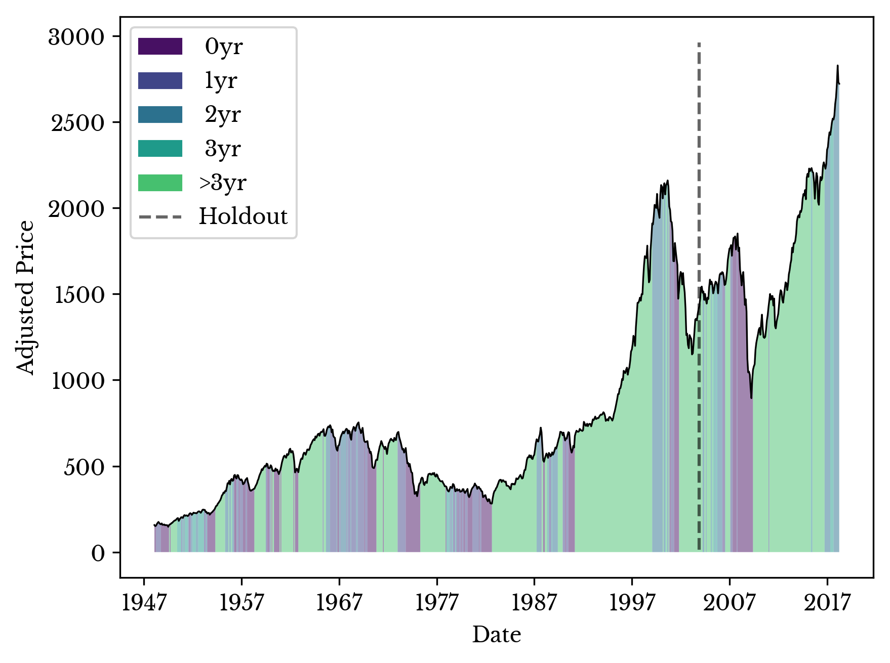

On the Analysis and Prediction of Recessions in the USA
Sat, 23 Jun 2018
Data Science, Data Visualization, Economics, Machine Learning, Statistics, Stocks
This chapter explores recessions in the United States of America. Datasets are collected from a variety of locations including the Federal Reserve Economic Data (FRED) and from the website of Yale professor and Nobel laureate Dr. Robert J. Shiller. A classifier model is constructed which predicts recessions and this model is analyzed for useful insights.Data Overview
Dr. Shiller maintains an impressive dataset of historical data relating to the S&P composite, interest rates, and consumer price index from 1871 to the present. In addition to historical price, dividends, and earnings data, Shiller presents an indicator of his own making: the cyclically adjusted price to earnings ratio (CAPE).CAPE is the ratio of the price to 10 year moving average of earnings for the S&P composite both adjusted for inflation. Figure 1 shows a plot of this ratio.
Figure 1: The Cyclically Adjusted Price to Earnings Ratio
In addition to the above, historical data on unemployment, GDP, an industrial production index, and oil are collected from FRED.
The National Bureau of Economic Research (NBER) maintains the official list of U.S. recessions on their website. Using this list, categorical labels are constructed. Five labels are used corresponding to the number of years until the next recession. The definitions of the five categorical labels are shown in Table 1.
| Label | Definition |
|---|---|
| 0 | Recession in progress |
| 1 | ≤ 1 year to next recession |
| 2 | ≤ 2 years to next recession |
| 3 | ≤ 3 years to next recession |
| 4 | > 3 years to next recession |
Table 1: The Definitions of the Classification Labels
Figure 2: Real S&P with Categorical Labels
The numerically smallest label is applied in each case. Thus, each month of each year can be classified as exactly one of the 5 labels. Figure 2 shows a plot of the inflation-corrected S&P composite stock index overlaid with the categorical labels.
Feature Engineering
The purpose of the model is to predict recessions and the periods leading up to them. Features are constructed which have a plausible relationship to recessions.Much of the data mentioned above is time-dependent and cannot be directly consumed by a typical classification model. For instance, it is not meaningful to directly compare the S&P price in 2008 to 1929 due to inflation and other factors. Instead, percentage changes are computed for many of the time series features. Figure 3 shows the transformation of the adjusted S&P price to percentage change.
Figure 3: Time-Series to Percentage Change Transformation
It is plausible that a percentage change in the S&P captures information about recessions due to their peak to trough definition. Percentage changes are computed for S&P data in addition to several other indicators.Other features allow for direct comparison. For example, the unemployment rate fluctuates relatively consistently between periods of expansion and recessions. It is also plausible that raw interest rates, and Shiller's CAPE provide meaningful information about recessions.
The data frame is organized by month so that each row corresponds to a year and month. Thus far, samples contain features relating to a single month. To provide the model with information about the past trend in addition to the current month, moving averages over the past six months are computed for each feature. A sample of the non-standardized data frame is shown in Table 2.
| Date | S&P | ... | CAPE | Target |
|---|---|---|---|---|
| 1871-01-31 | 4.44 | ... | 8.06 | 1 |
| 1871-02-28 | 4.5 | ... | 7.83 | 1 |
| ... | ... | ... | ... | ... |
| 2018-06-30 | 2746.87 | ... | 32.11 | 0 |
Table 2: Sample Taken from the Data Frame
Meaningful interactions likely exist between several variables. These could be captured with interaction terms, but these terms are not included in this initial model to allow for better interpretability.
The final data matrix is standardized on the training data so that each column is centered at 0 with unit variance.
Model Construction
A logistic regression model is fit to the data set. Each row of the data matrix corresponds to a month and year and each row of the target matrix corresponds to a categorical label. Sample weights are employed to assign greater importance to more recent samples.Cross-validation is performed using a hold-out period as is typical for time-series data. Some care is needed in constructing the hold-out period as the target labels are not defined after the Great Recession. A holdout period is selected after the dot-com bubble to evaluate the performance of the model with the Great Recession.

Figure 4: Real S&P with Predicted Labels for Great Recession Holdout
Figure 4 shows a plot of the real S&P price data overlaid by the predictions. As can be seen the model correctly classifies the 2008 recession. Further, the model identifies some of the early warning factors before the recession. Next the model is trained on all data up to 4 years before the present. The resulting predictions are shown in Figure 5.
Figure 5: Real S&P with Predicted Labels
The model predicts class 4 for most of 2013 and 2014. However, after the dip starting around the end of 2015, the model begins to predict an upcoming recession. Next, the model is analyzed to better understand its predictions.
Model Analysis
One of the primary advantages of using logistic regression is ease of interpretability. The coefficients of the standardized model provide insight into the relative importance of the features. Figure 6 shows a bar plot of the coefficients of the model.
Figure 6: Feature Importance as Logistic Regression Coefficients
In the above figure, the coefficients for the first 4 classes are summed. Further, the coefficients of the moving averages are added to the original features to show their total importance. The red bars have an inverse relationship with the likelihood of an upcoming recession. For instance, a low (negative) percentage change in the industrial production index provides evidence for a recession as the two negative signs cancel when multiplied.
Consider the most recent sample. The model assigns this sample a label of 2. Now, consider the coefficients of the model for class 2. The dot product of these two vectors gives the score the model assigns class 2. Since the model ultimately chooses class 2, this score is the maximum among all classes.
The dot product is the sum of the component-wise product of the vectors. The component-wise product of these two vectors is taken and the result is displayed in Figure 7 as a bar plot. The positive and negative bars provide evidence for and against an upcoming recession respectively.
Figure 7: Evidence For and Against an Upcoming Recession
The tallest bar corresponds to interest rates and their average percentage change over the past six months. Figure 8 shows a plot of the interest rates over the past ten years. As can be seen, the federal government raised interest rates significantly near the end of 2016. These increased interest rates discourage banks and other institutions from lending money. These increased rates appear as an attempt to cool off an overheating economy and the model weighs this heavily.
Figure 8: Interest Rates in the Past Decade
Of similar importance in Figure 7 is the recent behavior of the unemployment rate. This rate is approaching record lows; a fact that this is historically, and somewhat paradoxically, suggestive of an upcoming recession. Figure 9 shows the historical unemployment rate over the past forty years.
Figure 9: Historical Unemployment Rate in the USA
The model also finds the recent behavior of the industrial production index and S&P composite as an early indicator of an upcoming recession. The rapid expansion of the S&P appears to have halted around the start of 2018 and this behavior is likely being identified by the logistic regression model.